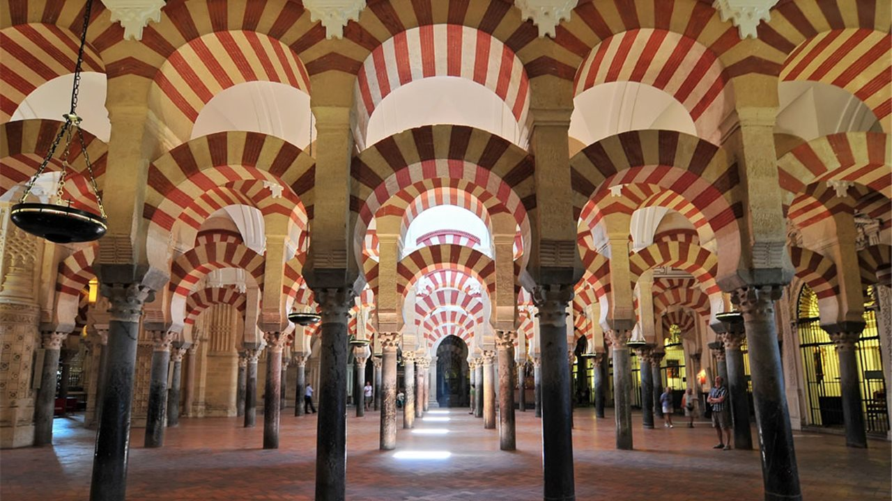

|
Viajes Martín Valle
|
TOUR
| Madrid |
Barcelona |
Valencia |
Córdoba |
|
|
|
 |
| Sevilla |
Murcia |
Bilbao |
Toledo |
|
|
|
|
Sobre los destinos
Madrid
Madrid es un municipio y una ciudad de España, con categoría histórica de villa. Constituye la capital del
Estado y de la Comunidad de Madrid. En su término municipal, el más poblado de España, viven 3.334.730 personas
empadronadas, según el INE de 2020, lo que la convierte en la segunda ciudad más poblada de la Unión Europea,
por detrás de Berlín. Su área metropolitana tiene 6.779.888 habitantes, la segunda más poblada de la Unión
Europea tras la de París, en otras fuentes detrás también de la Región del Ruhr.
La ciudad cuenta con un PIB nominal de 133.129 millones de euros –el 12% del PIB nacional– y un PIB per cápita
nominal de 41.600 € (2018), siendo la 1.ª área metropolitana española en actividad económica ––19% del PIB. Es
también la primera en más pernoctaciones hoteleras.
En calidad de capital de España, alberga las sedes del Gobierno de España y sus Ministerios, de las Cortes
Generales (Congreso y Senado), del Tribunal Supremo y del Tribunal Constitucional, así como la residencia
oficial de los reyes de España y del presidente del Gobierno. En el plano económico, es la cuarta ciudad más
rica de Europa, tras Londres, París y Moscú. En 2009, el 50,1 % de los ingresos de las 5000 principales
empresas españolas son generados por sociedades con sede social en Madrid, que suponen el 31,8 % de ellas. Es
sede del 4.ª mayor mercado de valores de Europa, 2.ª en el ámbito iberoamericano (Latibex) y de varias de las
más grandes corporaciones del mundo. Es la 8.ª ciudad del mundo con mayor presencia de multinacionales, tras
Pekín y Milán y por delante de Dubái, París y Nueva York.
En el plano internacional acoge la sede central de la Organización Mundial del Turismo (OMT), perteneciente a la
ONU, la sede de la Organización Internacional de Comisiones de Valores (OICV), la sede de la Secretaría General
Iberoamericana (SEGIB), la sede de la Organización de Estados Iberoamericanos para la Educación, la Ciencia y la
Cultura (OEI), el Organismo Internacional de Juventud para Iberoamérica (OIJ), y la sede de Public Interest
Oversight Board (PIOB). También alberga las principales instituciones internacionales reguladoras y difusoras
del idioma español: la Comisión Permanente de la Asociación de Academias de la Lengua Española, y sedes
centrales de la Real Academia Española (RAE), del Instituto Cervantes y de la Fundación del Español Urgente
(Fundeu). Madrid organiza ferias como FITUR, Madrid Fusión, ARCO, SIMO TCI, el Salón del Automóvil y la Cibeles
Madrid Fashion Week.
Es un influyente centro cultural y cuenta con museos de referencia internacional, entre los que destacan el
Museo del Prado, el Museo Nacional Centro de Arte Reina Sofía, el Thyssen-Bornemisza y CaixaForum Madrid, que
ocupan, respectivamente, el 14.º, 10.º, 67.º y 79.º puesto entre los museos más visitados del mundo. El Museo
del Prado se considera la mayor pinacoteca del mundo. Desde julio de 2021, el Paseo del Prado, el Parque del
Retiro y el Barrio de los Jerónimos han sido incluidos en la lista de Patrimonio de la Humanidad por la Unesco
formando el llamado Paisaje de la Luz, paisaje de las artes y las ciencias, con sus museos e instituciones.3
Los orígenes de la ciudad son objeto de revisión histórica tras hallazgos de enterramientos visigodos, que han
venido a confirmar que el posterior asentamiento fortificado musulmán de Maǧrīţ (del siglo IX) se había asentado
sobre un vicus visigodo del siglo VII llamado Matrice o matriz (arroyo). Las excavaciones arqueológicas también
desvelan restos que se atribuyen al Madrid romano, así como de restos que se remontan a los carpetanos o al
periodo prerromano. No sería hasta el siglo XI cuando Madrid fue incorporada a la Corona de Castilla, tras su
conquista por Alfonso VI de León en 1083. Fue designada como sede de la Corte por el rey Felipe II en 1561,
convirtiéndose en la primera capital permanente de la monarquía española y ha mantenido la capitalidad del país
desde entonces, salvo por breves intervalos de tiempo.
Barcelona
Barcelona es una ciudad española, capital de la comunidad autónoma de Cataluña, de la provincia homónima y
de la comarca del Barcelonés.
Con una población de 1.664.162 habitantes en 2020, es la segunda ciudad más poblada de España y de la península
ibérica después de Madrid, y la décima de la Unión Europea. El área metropolitana de Barcelona tiene 3.339.279
(2020) y el ámbito metropolitano de Barcelona 4.895.876 habitantes (2019), siendo así la quinta ciudad de mayor
población de la Unión Europea.
Cuenta con un PIB nominal de 142.223 millones USD y un PIB per cápita nominal de 30.619 USD, lo que representa
un PIB PPA per cápita de 36.240 USD, siendo la segunda área metropolitana española en actividad económica y la
decimoséptima europea después de Londres, París, Rin-Ruhr, Ámsterdam, Milán, Bruselas, Moscú, Fráncfort del
Meno, Múnich, Madrid, Berlín, Viena, Roma, Copenhague, Estocolmo y Birmingham.
Se ubica a la orilla del mar Mediterráneo, a unos 120 km al sur de la cadena montañosa de los Pirineos y de la
frontera con Francia, en un pequeño llano litoral limitado por el mar al este, la sierra de Collserola al oeste,
el río Llobregat al sur y el río Besós al norte. Por haber sido capital del condado de Barcelona, se suele
aludir a ella con la denominación antonomástica de Ciudad Condal.
La historia de Barcelona se extiende a lo largo de 4.000 años, desde finales del Neolítico, con los primeros
restos hallados en el territorio de la ciudad, hasta la actualidad. El sustrato de sus habitantes aúna a los
pueblos íberos, romanos, judíos, visigodos, musulmanes y cristianos. Como capital de Cataluña y segunda ciudad
en importancia de España, ha forjado su relevancia con el tiempo, desde ser una pequeña colonia romana hasta
convertirse en una ciudad valorada internacionalmente por aspectos como su economía, patrimonio artístico,
cultura, deporte y vida social.
Valencia
Valencia (en valenciano y oficialmente, València, AFI: [vaˈɫensia])es un municipio y una ciudad de
España, capital de la provincia homónima y de la Comunidad Valenciana. Con una población de 801.545 habitantes
(2020),que sube a 1.581.057 habitantes (2020) si se incluye su espacio urbano, es la tercera ciudad y área
metropolitana más poblada de España, por detrás de Madrid y Barcelona.
Valencia fue fundada por los romanos como colonia en el año 138 a. C., siendo cónsul Décimo Junio Bruto Galaico,
y se denominó Valentia Edetanorum. Después de los períodos romano y visigodo, en el año 711, los musulmanes
ocuparon la ciudad aportando su lengua, religión y costumbres, así como la implantación de sistemas de riego y
la introducción de nuevos cultivos. En 1238 el rey cristiano Jaime I de Aragón reconquistó la ciudad, y repartió
las tierras entre los nobles que le ayudaron a conquistarla, tal y como queda testimoniado en el Llibre del
Repartiment, así como también creó una nueva ley para la ciudad, los Fueros de Valencia, los cuales se hicieron
extensivos al resto del reino de Valencia. En el siglo XVIII, Felipe V derogó los fueros como castigo al reino
de Valencia por alinearse con los austracistas en la guerra de sucesión española. En 1982 se instituyó a
Valencia como la capital de la actual Comunidad Valenciana, tal y como recoge el Estatuto de Autonomía.
La ciudad está situada a orillas del río Turia, en la costa levantina de la península ibérica, justo en el
centro del golfo de Valencia, aunque en el momento que los romanos la fundaron, se encontraba en una isla
fluvial del Turia, a unos cuatro kilómetros de distancia del mar. A unos diez kilómetros al sur de la ciudad se
encuentra la Albufera de Valencia, la cual es propiedad del Ayuntamiento de Valencia desde 1911 cuando la compró
a la Corona de España por 1.072.980 pesetas. La albufera es uno de los lagos más grandes de España, ya que
tiene cerca de 2.100 hectáreas de superficie,13 a las cuales hay que añadir una extensión de 14.100 hectáreas
de marjal dedicadas al cultivo del arroz. Debido a su valor cultural, histórico y ecológico, fue el primer
parque natural que declaró la Generalidad Valenciana, en 1986.
En la actualidad la economía de la ciudad se centra en los servicios, ya que cerca del 84 % de la población
activa ocupada pertenece al sector servicios. No obstante, la ciudad mantiene una base industrial, con un
porcentaje de población ocupada del 5,5 %. Por otro lado, las actividades agrícolas, aun teniendo una
importancia relativamente menor con solo el 1,9 % de la población activa ocupada, perviven en el término
municipal con un total de 3.973 hectáreas, las cuales están ocupadas en su mayor parte por cultivos de huerta y
cítricos.
Su casco histórico es uno de los más extensos de España, con aproximadamente 169 hectáreas, y gracias a su
patrimonio histórico y monumental y sus diversos espacios escénicos y culturales la convierten en una de las
ciudades con mayor afluencia de turismo nacional e internacional de todo el país. Entre sus monumentos más
representativos se encuentran el Miguelete, la Catedral, las Torres de Serranos y de Quart, la Lonja de la Seda,
declarada como Patrimonio de la Humanidad por la Unesco en 1996, y la Ciudad de las Artes y las Ciencias.
También hay que destacar que el Museo de Bellas Artes de Valencia es el museo pictórico más importante de la
Comunidad Valenciana siendo por su relevancia la segunda pinacoteca de España, al igual que el Instituto
Valenciano de Arte Moderno (IVAM), el cual tiene por objetivo el investigar y difundir el arte del siglo XX, o
el Museo Valenciano de la Ilustración y la Modernidad, un espacio de interacción cívica y de reflexión sobre los
problemas y la fisonomía de la sociedad actual.
Debido a su larga historia, esta es una ciudad con innumerables fiestas y tradiciones, entre las que caben
destacar las fallas, las cuales fueron declaradas como fiestas de interés turístico internacional el 25 de enero
de 1965 y Patrimonio cultural inmaterial de la Humanidad por la UNESCO el 30 de noviembre de 2016, y el
Tribunal de las Aguas, también declarado en 2009 como Patrimonio cultural inmaterial de la Humanidad. Además de
esto, Valencia ha sido, y es en la actualidad, escenario de diversos eventos mundiales que han contribuido a
configurar la ciudad y darle proyección internacional, como han sido la Exposición Regional de 1909, la 32.ª y
la 33.ª Copa América de vela, el Gran Premio de Europa de Fórmula 1, el Open 500 de tenis, y el Global
Champions Tour de Hípica.
Córdoba
Córdoba es una ciudad y municipio español en Andalucía, capital de la provincia homónima, situada en una
depresión a orillas del Guadalquivir y al pie de Sierra Morena. Alberga una población de 326.039 habitantes en
2020, siendo la tercera ciudad más grande y poblada de Andalucía tras Sevilla y Málaga, y la duodécima de
España. Su área metropolitana comprende ocho municipios, con una población de 360.298 habitantes en 2020, la
vigésima tercera más poblada de España.
Fundada por los romanos durante el siglo II a. C., llegaría a ser capital de la Hispania Ulterior en tiempos de
la República romana, además de la provincia Bética durante el Imperio romano. No obstante, su momento álgido
trascurrirá durante la dominación musulmana de la península ibérica, cuando se alzará como capital del Emirato
de Córdoba, mientras que durante el Califato de Córdoba se convirtió en la ciudad más habitada, culta y opulenta
de Europa y un centro líder mundial de la educación. Durante la larga Edad Media europea, en Córdoba
florecieron las letras y las ciencias, gestándose las bases del Renacimiento europeo. Abundaron las mezquitas,
las bibliotecas, los baños y los zocos, además de contar con multitud de fuentes, iluminación pública y
alcantarillado durante la época de mayor esplendor califal.
Sevilla
Sevilla es un municipio y una ciudad de España, capital de la provincia homónima y de Andalucía. Contaba
con 691 395 habitantes en 2020, por lo que es la ciudad más poblada de Andalucía, la cuarta de España después
de Madrid, Barcelona y Valencia y la 32.ª de la Unión Europea. El municipio tiene una superficie de 140,8 km².
El área metropolitana de Sevilla está compuesta por 46 municipios, incluye a una población de 1 548 741
habitantes (INE, 2020) y ocupa una superficie de 4905,04 km².
Su casco antiguo, con 3,9 km², es el más extenso de España y el sexto más grande de Europa, tras los de Roma
(14,6 km²), Nápoles (10,3 km²), Venecia (7,6 km²), Florencia (5,5 km²), y Génova (4,1 km²). Sevilla es una de
las ciudades con más monumentos catalogados en Europa. Su casco histórico es uno de los mayores de España
(nótese la diferencia entre casco antiguo, que solo incluye la zona histórica anterior a la Revolución
Industrial, y casco histórico, que abarca estadios posteriores). Su patrimonio histórico y monumental y sus
diversos espacios escénicos y culturales la constituyen en ciudad receptora de turismo nacional e internacional.
Es la tercera ciudad de España por número de visitantes, tras Barcelona y Madrid. Entre sus monumentos más
representativos se encuentran la catedral (que incluye la Giralda), el Alcázar, el Archivo de Indias y la Torre
del Oro, los tres primeros declarados Patrimonio de la Humanidad por la Unesco en 1987.
Murcia
Murcia es una ciudad española, capital del municipio del mismo nombre y de la Región de Murcia. Es el
centro de la comarca de la Huerta de Murcia y de su área metropolitana. Está situada en el sureste de la
península ibérica, a orillas del río Segura, en la denominada depresión prelitoral murciana, a 40 kilómetros del
mar Mediterráneo. Con 459 403 habitantes (INE, 2020), es el séptimo municipio más poblado de España.
El área urbana de la ciudad (o zona metropolitana), aunque no establecida oficialmente, comprendería a unos diez
municipios de la Región de Murcia, contando con una población de 664 058 habitantes en 2019, repartidos en una
superficie total de 1230,92 km², con una densidad de población de 539 hab/km². De este modo, el área urbana de
Murcia ocuparía el 10º puesto en la lista de áreas metropolitanas de España.
Bilbao
Bilbao (en euskera, Bilbo) es un municipio situado en el norte de España y una villa de dicho municipio,
capital de la provincia y territorio histórico de Vizcaya, en la comunidad autónoma del País Vasco. La villa de
Bilbao es la capital y única localidad del municipio, y con 346 843 habitantes según el padrón de 2019, es la
urbe más poblada de la comunidad autónoma, siendo la cabecera del área metropolitana de Bilbao, una conurbación
de más de 1 000 000 de habitantes que se extiende a lo largo de la ría de Bilbao o del Nervión.
El municipio se encuentra flanqueado por dos cadenas montañosas, con una altitud media que no supera los 400
metros,12 y que forman algunos de sus límites naturales. Limita con Erandio, Sondica, Zamudio, Galdácano,
Echévarri, Basauri, Arrigorriaga, Alonsótegui y Baracaldo.
Desde su fundación, a finales del siglo XIII, fue un enclave comercial que gozó de particular importancia en la
cornisa Cantábrica gracias a los privilegios concedidos por la Corona de Castilla13 que permitieron el
desarrollo de una gran actividad portuaria que se basaba principalmente en la exportación de la lana procedente
de Castilla y en menor medida del hierro extraído de las canteras vizcaínas. A lo largo del siglo xix y
principios del xx experimentó una fuerte industrialización que la convirtió en el epicentro de la segunda región
industrializada de España, por detrás de Barcelona.1415 Esta estuvo acompañada de una extraordinaria explosión
demográfica y urbanística que originó la anexión de varios municipios colindantes. En la actualidad es una
pujante ciudad de servicios,14 que se encuentra en un proceso de revitalización estética, social y económica
liderado por el simbólico Museo Guggenheim Bilbao.
Toledo
Toledo es un municipio y ciudad española, capital de la provincia homónima, en la comunidad autónoma de
Castilla-La Mancha. Con una población de 85.811 habitantes (INE 2020), se trata del tercer municipio más poblado
de la región. El casco histórico está situado en la margen derecha del Tajo, en una colina rodeada por un
pronunciado meandro. El término municipal incluye dos barrios muy separados del núcleo principal: el de
Azucaica, en la orilla derecha del río, y el de Santa María de Benquerencia, situado prácticamente enfrente del
anterior en la margen izquierda.
La ciudad fue un importante centro carpetano hasta la conquista romana en 193 a. C. Tras las invasiones
germánicas, Toledo se convertiría en capital y, posteriormente, principal sede eclesiástica del Reino visigodo.
En el año 711, Toledo fue conquistada por los musulmanes, cuyo dominio finalizó con la toma de la ciudad en 1085
por Alfonso VI. Es conocida como «la ciudad imperial» por haber sido la sede principal de la corte de Carlos I y
también como «la ciudad de las tres culturas», por haber estado poblada durante siglos por cristianos, judíos y
musulmanes. En el siglo XVI tuvieron lugar la guerra de las Comunidades de Castilla y el traslado en 1561 de la
corte a Madrid, tras el cual la ciudad entró en decadencia, acentuada por la crisis económica del momento. Ya en
época contemporánea, se recuerda el asedio y defensa del alcázar durante la guerra civil. En 1983 Toledo pasó a
ser sede de las Cortes regionales y de la Junta de Comunidades de Castilla-La Mancha y en 1986 su casco
histórico fue declarado Patrimonio de la Humanidad.
En la actualidad la gran mayoría de la población se dedica al sector servicios, existiendo tradición local en la
fabricación de espadas. Una línea de ferrocarril Avant conecta Toledo y Madrid en 33 minutos. Cuenta con
diversas infraestructuras sanitarias, incluido el Hospital Nacional de Parapléjicos, y con la presencia de la
Academia de Infantería.